Managing personal finances can be overwhelming, with the need to track expenses, set savings goals, and understand spending habits. Users often struggle with complex, inefficient tools that don’t offer personalized insights or seamless integration with their financial accounts.
Duration: 5 weeks
As Co-Web Designer and Project Manager, I worked on creating a user-friendly interface for Sprout, ensuring a smooth experience across platforms. I also coordinated the project, helping the team stay on track and deliver a financial tool that’s both intuitive and effective for managing money.
Tools: Figma & Illustrator
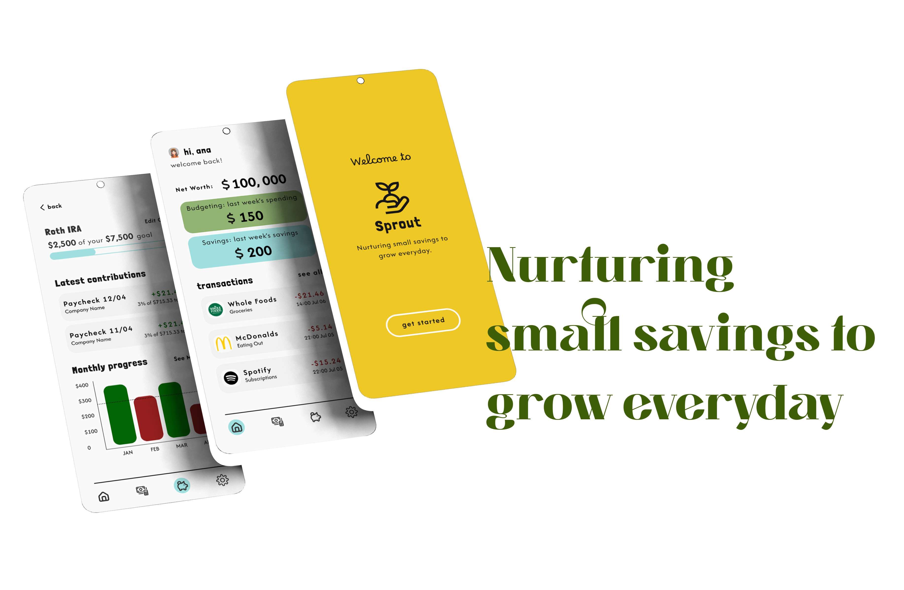
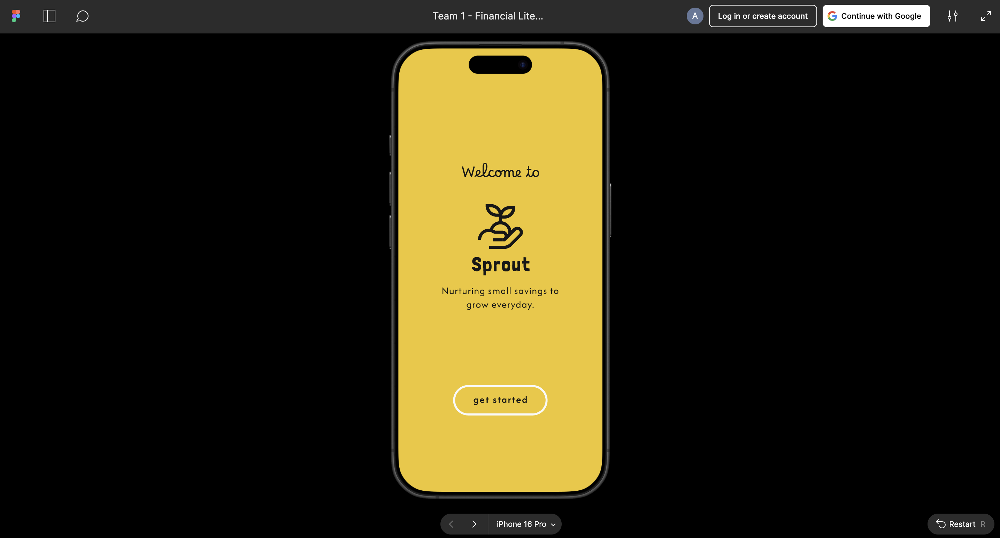
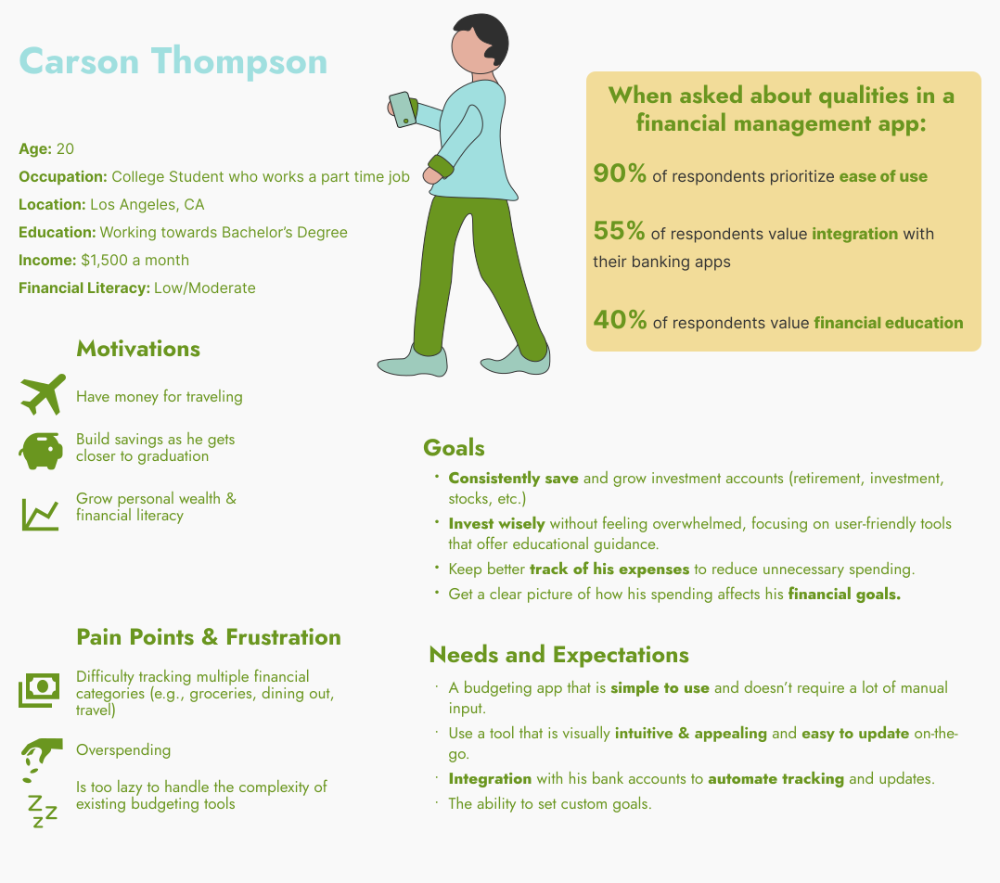
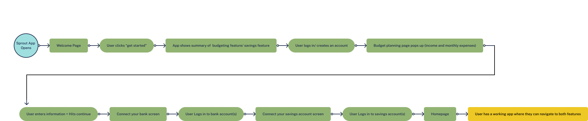
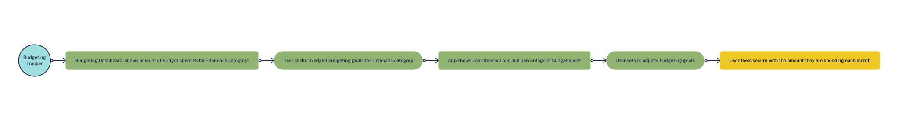
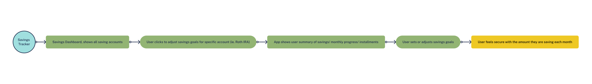
During the design process of the app, several UX/UI challenges were identified during various usability tests. A lack of clarity regarding what features were clickable caused confusion, as buttons and static content were not visually distinct. Insufficient color contrast made certain elements hard to read, especially for users with visual impairments. Features lacked clear differentiation, blending into one another and reducing overall usability. The font choice didn’t convey the intended feel, and the design was perceived as too “Excel-like,” giving it a rigid and overly technical appearance. Additionally, there was an overload of information on some screens, which overwhelmed users and made navigation difficult. These issues were compounded by inconsistent design language and poor visual hierarchy, which further detracted from the app's usability and user experience.
To address these challenges, the app's design was revamped with a clear focus on improving usability and aesthetics. Interactive elements like buttons were redesigned to stand out distinctly, using visual cues like color, size, and corner radius. High-contrast color schemes were implemented to enhance readability and accessibility. Features were given unique visual identifiers and logical groupings to ensure clarity and reduce confusion. A more playful, approachable font was selected to align with the app’s goals and audience, moving away from the overly technical, spreadsheet-like feel. Information overload was resolved by organizing content into digestible chunks. Consistent design patterns and a strong visual hierarchy were established to guide users seamlessly through the interface, creating a more intuitive and user-friendly experience.
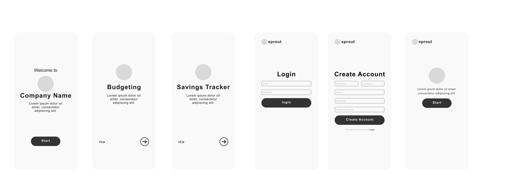
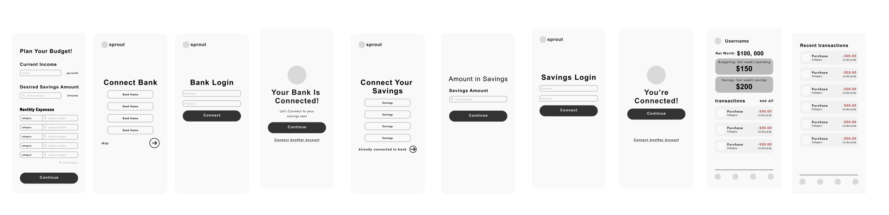
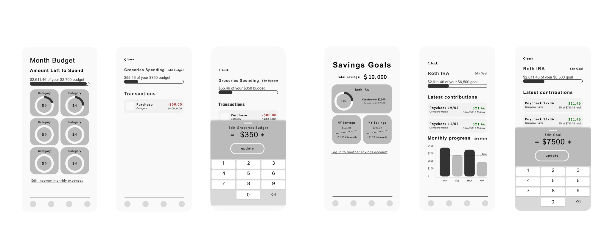
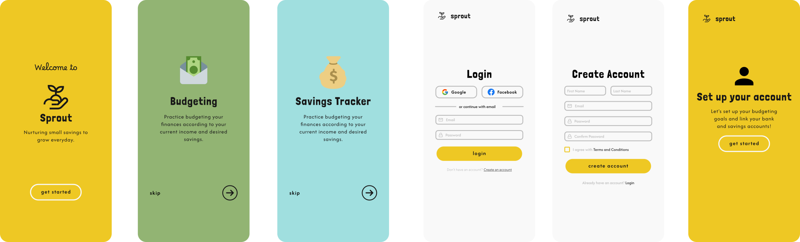

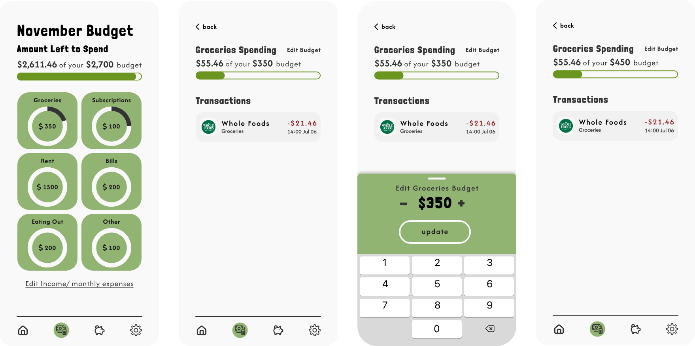
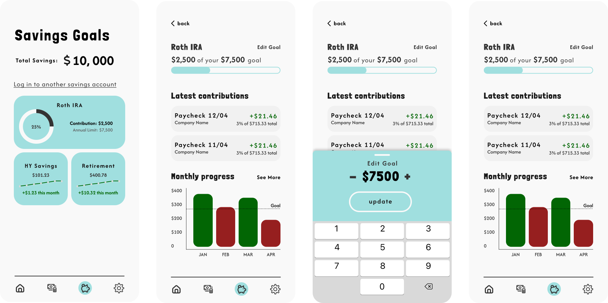
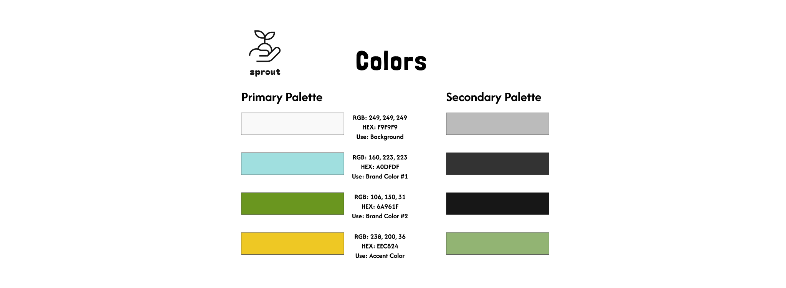
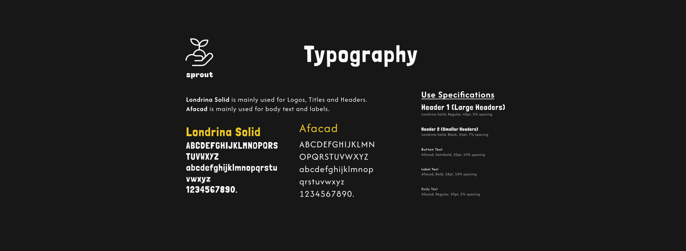